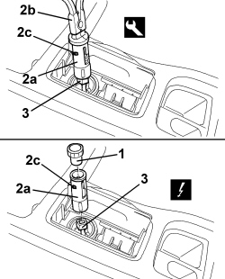

7065C72 FRONT CIGAR LIGHTER SOCKET - R.R.
- Path
- Procedures > 70 FITTINGS > 7065 SEAT BELTS AND ACCESSORIES > 7065C ACCESSORIES AND DECORATIONS > 7065C72 FRONT CIGAR LIGHTER SOCKET - R.R.
- Kind
- repair procedure (removal / refitting; the operation number is the code)
- Applies to
- all engines; all production periods
- Interactive page
- https://sloeber94.github.io/elrnDB-aBrrSpdr/en/#/946002701
Applies to: all engines; all production periods
 Removing
Removing
 Refitting
Refitting1. Extract the cigar lighter.
2. Gently extract cigar lighter seat (2a) using special tool (2b).
Tool | Description | Function | Validity |
|---|---|---|---|
1876044000 | Calliper | Extracting cigar lighter housing |
3. Detach the electrical connection.
Description | Component |
|---|---|
CIGAR LIGHTER/CURRENT SOCKET |

Applies to: all engines; all production periods
Refitting
Removing- Check that the cigar lighter seat is not damaged.
- Attach the electrical connection.
- Fit the cigar lighter seat.
- Insert the cigar lighter